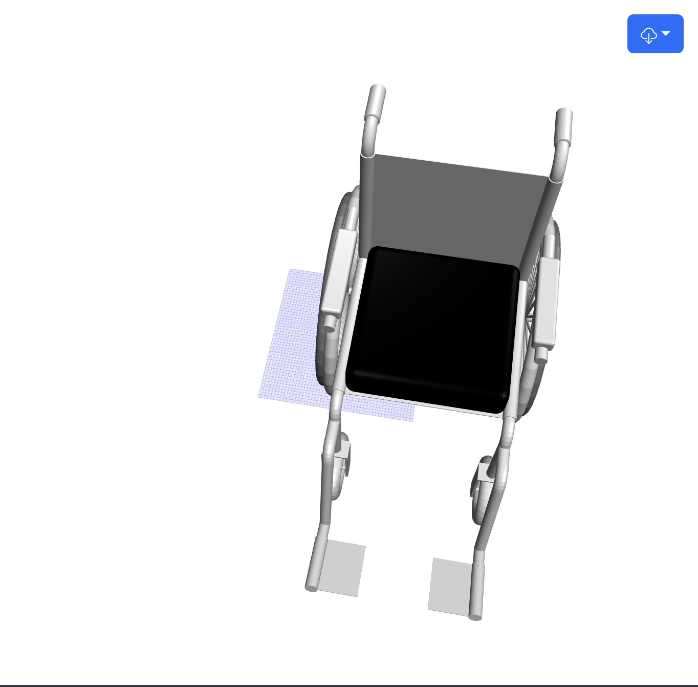
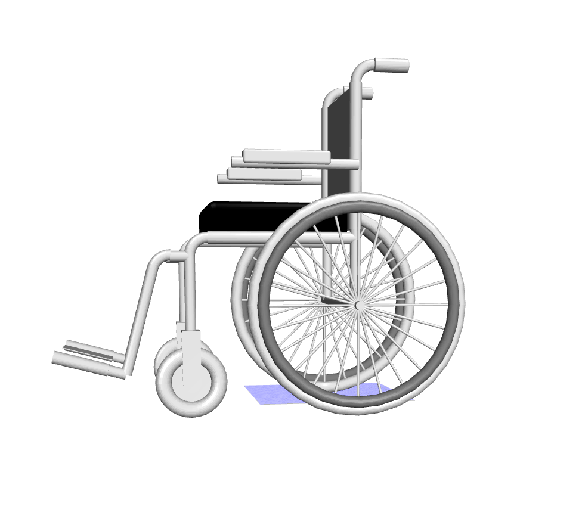
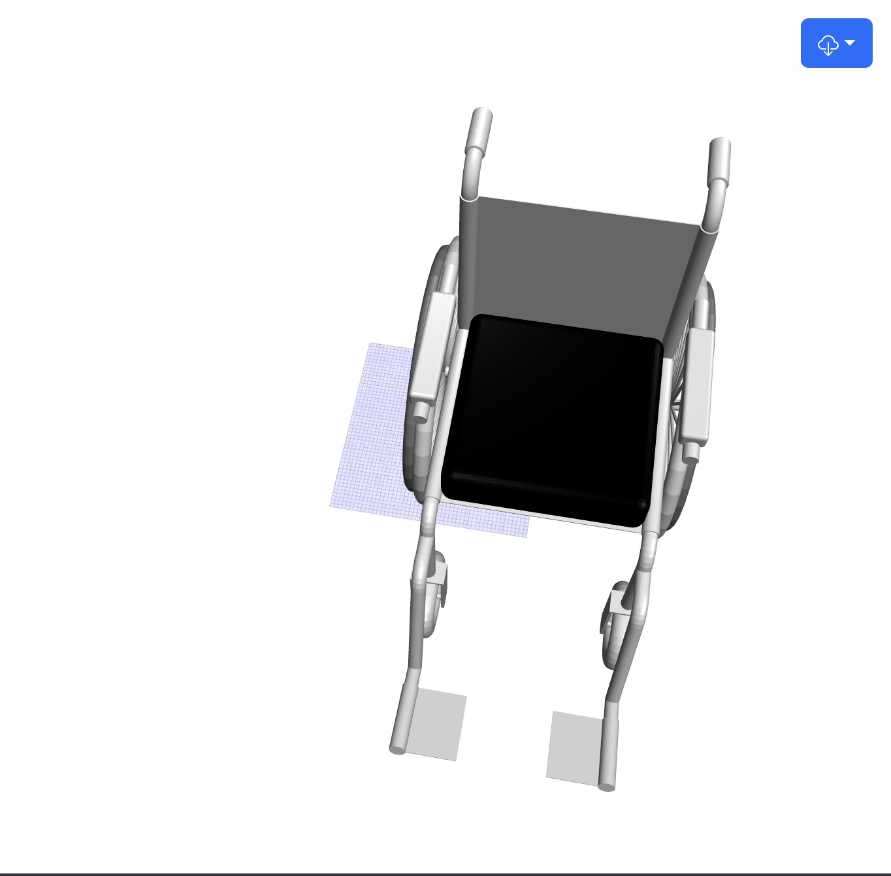
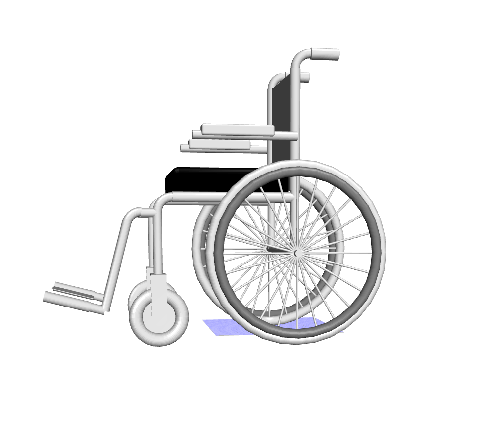

Project: S.U.R.E. 3D Wheelchair Digital Model (UMTRI at UMich)
 



- Developed and designed computational models of wheelchair geometry for dynamic test fixture design, ensuring high precision in model simulation and data analysis.
- Utilized JavaScript (JSCAD) for real-time data analysis and visualization, processing wheelchair geometries for usability testing.
- Applied Agile methodologies in developing models, iterating based on real-time feedback from project stakeholders.